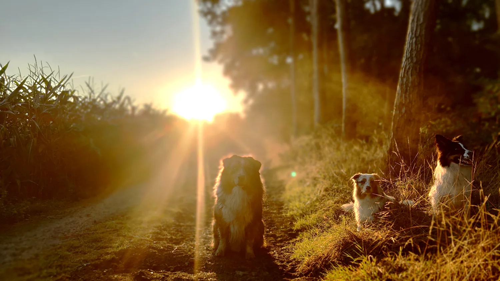
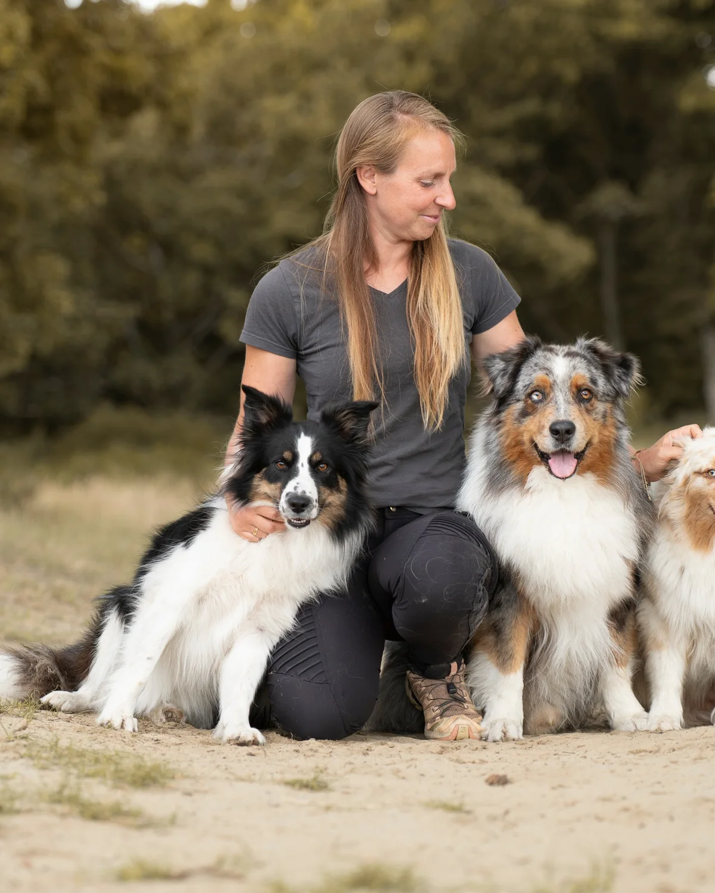

Probleemgedrag
ProbleemgedragIndividuele begeleiding
Voor honden die trekken, uitvallen, bewaken of moeilijk tot rust komen.
- Eerst begrijpen wat er werkelijk speelt
- Oefeningen voor jullie echte situaties
- Opvolgen en bijsturen

Wij zijn Sara en Frederik. We begeleiden honden en hun baasjes zonder oordeel, met duidelijke communicatie, structuur en oefeningen die passen in jullie dagelijkse leven. Want geen hond of baasje hoeft perfect te zijn.
Wandelingen worden een opgave en bezoek zorgt voor spanning. Misschien heb je al van alles gehoord, maar lijkt niets blijvend te helpen. Je hoeft niet te wachten tot het erger wordt.
Ongewenst gedrag betekent niet dat je een slechte hond hebt, of dat jij gefaald hebt.
Geen losse tips, maar een traject met een plan. Afhankelijk van jullie situatie kies je een volledig pakket of losse individuele lessen.
ProbleemgedragVoor honden die trekken, uitvallen, bewaken of moeilijk tot rust komen.
 Vanaf dag één
Vanaf dag éénEen fijne gezinshond ontstaat niet vanzelf. Je bouwt eraan vanaf de eerste dag.
 En dan de puberteit
En dan de puberteitJe hond kent de oefeningen, maar kiest er steeds vaker voor om ze niet te doen. Herkenbaar?

We brengen het gedrag, jullie leefomgeving en jullie hulpvraag in kaart, en bekijken welk traject bij jullie past.
Hoe communiceren honden en waar komt gedrag vandaan? Tien jaar ervaring als hondentrainers schreven we neer in ons online handboek Life with Dogs.
Geen kunstmatige demonstraties, maar oefeningen voor de situaties waar jullie echt vastlopen.
Nothing changes if nothing changes.
Onze liefde voor honden bracht ons van de hondenschool naar diverse opleidingen, en naar het professioneel begeleiden van honden en hun baasjes.
We weten uit eerste hand hoe zwaar ongewenst gedrag kan wegen. Onze eerste eigen hond leerde ons hoe frustrerend dat kan zijn, maar ook hoeveel er mogelijk wordt als je opnieuw begrijpt wat je hond nodig heeft.

"Van een onzekere vocale puppy, naar een zelfzeker en zelfstandige pomeriaan! Toen we dachten dat ons sociaal leven helemaal voorbij was, kon Sara ons bijstaan bij het leren alleen thuisblijven."
"Sara & Frederik hebben ons goed op weg gezet met puppylessen en vragen die we hadden bij de opvoeding van onze Lexi. We kunnen genieten van een gezinshond die overal mee naartoe kan! Wij zijn fan!"
"Ik ben zo dankbaar voor Sara. Ze bracht Bassie en ons gezin dichter bij elkaar. Op een gezonde manier grenzen leren trekken en nabijheid geven is zo waardevol."
Vertel ons kort wie jullie zijn en waar jullie tegenaan lopen. Wij bekijken welke begeleiding het best bij jullie past.
Ik maakte deze demo voor jullie om te tonen wat er kan. Na een kort gesprek maak ik er iets veel persoonlijkers van, helemaal naar jullie wens.
Vrijblijvend. Ik kom langs of we bellen.
Op maat, op jullie eigen domein.
Geen voorschot. Jullie betalen pas als alles klaar is.
Hosting, domeinnaam en kleine wijzigingen, zoals nieuwe openingsuren.
Omdat een voorbeeld meer zegt dan een mail. Zo zien jullie meteen wat er kan, en het kost jullie niets.
Nee. Het gesprek is vrijblijvend. Vinden jullie het niks, dan is het daarmee gedaan.
Na ons gesprek staat jullie site binnen 10 tot 14 dagen online.
Zeker. Jullie domeinnaam kan gewoon blijven, de nieuwe site komt in de plaats van de oude.
Nee, dat doe ik op basis van ons gesprek. Eigen foto's zijn mooi meegenomen, maar niet nodig om te starten.